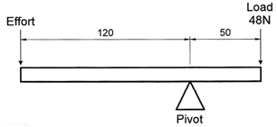

Systems & Control
Table of Contents

1 Introduction
- For the exam, you need to be able to match control systems to specific industrial applications – consideration of mechanical, electrical, electronic, programmable logic units and microcontrollers.
Input/Output Devices
- force
- motion
- movement
- velocity
- pressure
- voltage
- current
- resistance
- power
- signals
- positive and negative going pulses
- positive and negative edge triggering
- mark/Space ratio
- amplitude
- frequency
System Definitions
- Ensure you know these definitions (Wikipedia has great definitions here)
- definition of a system
- system boundaries
- sub-systems
- system components System Building Blocks
- sensors
- input transducers
- signal conditioners
- timers
- amplifiers
- comparators
- counters
- latches
- flip flops
- logical operators
- output transducers
- programmable devices Interfacing System Blocks The selection of suitable interfaces to establish connections in electrical, electronic and mechanical systems. e.g. motors, solenoid valves, relays and amplifiers.
Amplification
- The amplification of:
- force
- motion
- movement
- velocity
- pressure
- voltage
- current
- power
- signal
2 Recap
Past Paper Questions
- 2009, Q4. Using an example of your choice, describe a closed loop control system. (4)
- 2009, Q8. (a) Describe two situations where frictional forces are undesirable in mechanical systems and explain how they may be reduced. (6)
- (b) Using annotated sketches, describe the operation of two types of braking system used on mechanisms or machinery of your choice. (10)
- (c) A lever is shown in the diagram below. Given that:
- Force A × Distance A = Force B × Distance B

- calculate the effort required to balance the load. (4)
- 2011, Q2(a). Explain, feedback within a closed loop system (2 marks)